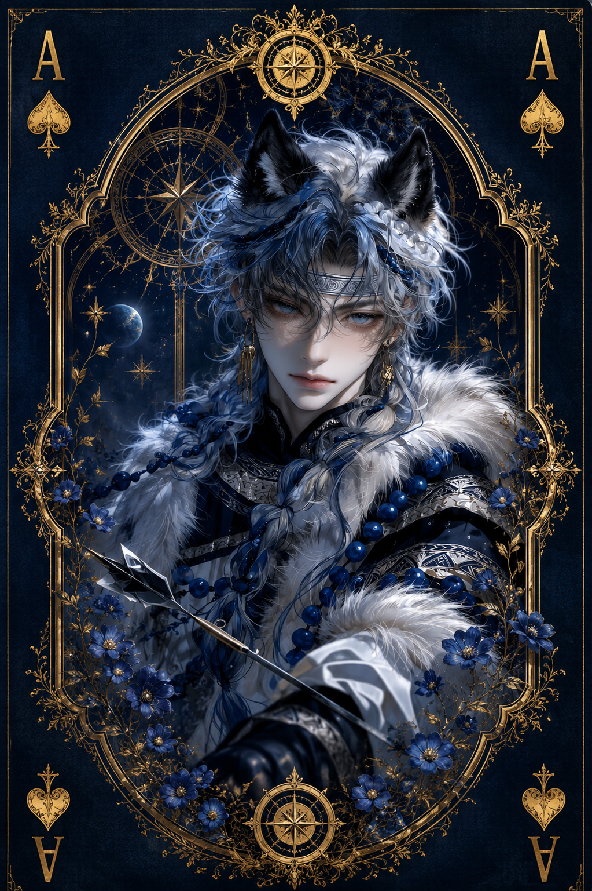

| Race | Wolfkin |
| Gender | Male |
| Age | 28 Years |
| Nation | Umbrawood |
| Weapon | Antler Bow |
| Magic | Beast Tracking Magic |
Fernys is a skilled hunter from Umbrawood, widely known among its inhabitants for tracking and hunting the dangerous creatures that roam the region. He lives high within one of Umbrawood's enormous ancient trees, far from the paths most travelers would dare to follow.
Among his own people, Fernys is friendly, approachable, and always willing to lend a hand. His attitude changes around strangers, however. Years spent hunting unpredictable beasts have made him extremely cautious, and earning his trust usually takes time.
Unlike many powerful figures across Eryndor, Fernys does not rely on overwhelming magical strength. His reputation as a Beast Hunter comes from experience, patience, sharp instincts, and remarkable accuracy. His signature weapon is a specially crafted bow incorporating a deer antler, accompanied by subtle tracking magic that helps him pursue creatures through Umbrawood's dense wilderness.
Although Fernys is considered only moderately dangerous and possesses relatively modest magical power, underestimating him inside his own territory would be a mistake. Few know Umbrawood's forests and beasts as intimately as he does, making the wilderness itself one of his greatest advantages.